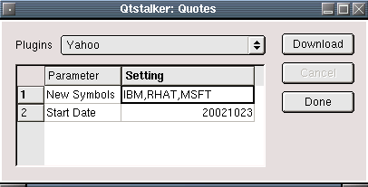
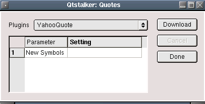

This is the quote download center. You use the various quote plugins to download the data you want and import them into Qtstalker. Each plugin will use different input data parameters. Once all the input parameters are satisfied, pressing the "Download" button will start the download. If you want to interrupt a download, press the cancel button. You may change the settings by either single or double clicking with the mouse anywhere in the setting box. Depending on the setting type, a dialog will be popup or double clicking will alow you to manually enter data. This works just like a spreadsheet for entering data.
The available plugins are:
EOD futures quotes from the Chicago Board of Trade.
Input parameters:
EOD and historical futures quotes from the Chicago Mercantile Exchange. Selecting the Today setting for Quote Type parameter will download just the EOD data. Selecting History will download the past years history of the selected Symbol.
Input parameters:
EOD futures quotes from the New York Board of Trade. As of now, they use dynamic html to serve quotes, which makes it very difficult to get in an automated manner. So you must download the data manually using a browser and then use this plugin to read the ASCII file. This plugin can read the format of the ASCII file only.
Input parameters:
This will allow you to import ASCII data that was exported only by Qtstalker previously. Qtstalker has an export function that dumps the chart from key/data binary data into a ASCII file. This plugin can read this data back in and re-create the chart. This plugin is only useful for fixing data problems or disaster recovery functions. I have included it for those purposes.
Input parameters:
Historical quotes from all yahoo supported exchanges are available with this plugin. The plugin works in two modes. It will either update all yahoo symbols or download new symbols, but not both at the same time. To update current symbols, just set the date and download. If you want to enter new symbols, double click the New Symbols setting and enter the symbols seperated by a comma. ie. IBM,RHAT,MSFT
Input parameters:
Here is what it looks like when entering new symbols. (Don't forget the commas, or nothing will happen or worse...)

10 - 20 minute Delayed quotes from yahoo supported exchanges are available with this plugin. This works the same way as the above Yahoo plugin.
Input parameters:
